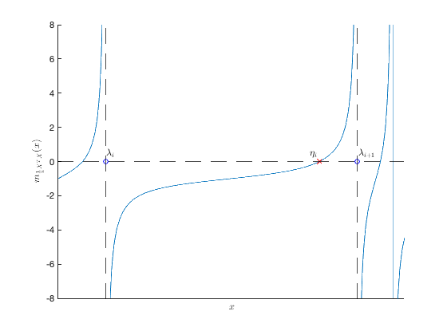
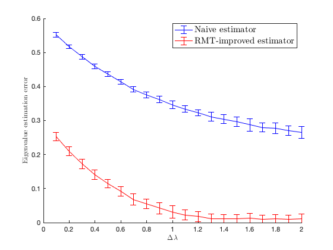

Section 2.4.1: Linear eigenvalue statistics
This page contains an application example of Theorem 2.12: estimating population eigenvalues, in the fully separable case.
Contents
Empirical eigenvalues of versus limiting spectrum
close all; clear; clc coeff = 3; p = 200*coeff; n = 1000*coeff; c = p/n; eig_C = [1,3,7]; cs = [1/3 1/3 1/3]; eigs_C = [eig_C(1)*ones(p/3,1); eig_C(2)*ones(p/3,1); eig_C(3)*ones(p/3,1)]; C = diag(eigs_C); % population covariance Z = randn(p,n); X = C^(1/2)*Z; SCM = X*(X')/n; eigs_SCM = eig(SCM); edges=linspace(.1,max(eigs_SCM)*1.01,300); clear i y = 1e-5; zs = edges+y*1i; mu = zeros(length(zs),1); tilde_m=0; for j=1:length(zs) z = zs(j); tilde_m_tmp=-1; while abs(tilde_m-tilde_m_tmp)>1e-6 tilde_m_tmp=tilde_m; tilde_m = 1/( -z + 1/n*sum(eigs_C./(1+tilde_m*eigs_C)) ); end m = tilde_m/c+(1-c)/(c*z); mu(j)=imag(m)/pi; end figure(1) hold on histogram(eigs_SCM, 60, 'Normalization', 'pdf', 'EdgeColor', 'white'); plot(edges,mu,'r', 'Linewidth',2); legend('Empirical eigenvalues of $\frac1n X^T X$', 'Limiting spectrum $\mu$', 'FontSize', 15, 'Interpreter', 'latex')

Visualization of local behavior of Stieltjes transform  around eigvanlue of
around eigvanlue of
m = @(x) sum(1./(eigs_SCM-x))/n - (n-p)./x/n; Tol1 = 5e-4; index_eigs_SCM = 51; zoom_eigs_SCM = linspace(eigs_SCM(index_eigs_SCM)-Tol1,eigs_SCM(index_eigs_SCM+1)+Tol1,1000); Tol2 = 3e-5; zoom_eigs_SCM(zoom_eigs_SCM<=eigs_SCM(index_eigs_SCM)+Tol2 & zoom_eigs_SCM>=eigs_SCM(index_eigs_SCM)-Tol2)=NaN; zoom_eigs_SCM(zoom_eigs_SCM<=eigs_SCM(index_eigs_SCM+1)+Tol2 & zoom_eigs_SCM>=eigs_SCM(index_eigs_SCM+1)-Tol2)=NaN; % numerical evaluation of zeros of m with Remark 2.12 zeros_m = real(eig(diag(eigs_SCM) - sqrt(eigs_SCM)*sqrt(eigs_SCM')/n)); zero_m = zeros_m(zeros_m<eigs_SCM(index_eigs_SCM+1) & zeros_m>eigs_SCM(index_eigs_SCM)); figure(2) hold on plot(zoom_eigs_SCM, m(zoom_eigs_SCM)); xline(eigs_SCM(index_eigs_SCM),'--k'); xline(eigs_SCM(index_eigs_SCM+1),'--k'); yline(0,'--k'); axis([eigs_SCM(index_eigs_SCM)-Tol1 eigs_SCM(index_eigs_SCM+1)+Tol1 -8 8]) xlabel('$x$', 'Interpreter', 'latex') ylabel('$m_{\frac1n X^T X}(x)$', 'Interpreter', 'latex') plot(eigs_SCM(index_eigs_SCM),0,'bo'); text(eigs_SCM(index_eigs_SCM)+1e-5,.5,'$\lambda_i$', 'Interpreter', 'latex', 'FontSize',12) plot(eigs_SCM(index_eigs_SCM+1),0,'bo'); text(eigs_SCM(index_eigs_SCM+1)+1e-5,.5,'$\lambda_{i+1}$', 'Interpreter', 'latex', 'FontSize',12) plot(zero_m, 0,'rx'); set(gca,'xtick',[]) text(zero_m-1e-4, .5,'$\eta_i$', 'Interpreter', 'latex', 'FontSize',12)
Population eigenvalue versus the naive, and the proposed RMT-estimator
eigs_SCM = sort(eigs_SCM); disp('Population eigenvalues:') disp(eig_C) disp('Naive (and biased) estimation by averaging over each component:') disp([mean(eigs_SCM(1:p/3)), mean(eigs_SCM(p/3+1:2*p/3)), mean(eigs_SCM(2*p/3+1:end))]) disp('RMT-improved estimator:') disp(sort(popu_eigs_estim(eigs_SCM,n,cs)))
Population eigenvalues:
1 3 7
Naive (and biased) estimation by averaging over each component:
0.8233 2.7547 7.4162
RMT-improved estimator:
1.0014 3.0063 6.9864
Eigenvalue estimation error as a function of population eigenvalue distance
close all; clear; clc coeff = 1; p = 256*coeff; n = 1024*coeff; c = p/n; delta_lambda_loop = .1:.1:2; nb_average_loop = 30; error_store_naive = zeros(length(delta_lambda_loop),nb_average_loop); error_store_RMT = zeros(length(delta_lambda_loop), nb_average_loop); for delta_lambda_index = 1:length(delta_lambda_loop) delta_lambda = delta_lambda_loop(delta_lambda_index); eig_C = [1, 1+ delta_lambda]; cs = [1/2, 1/2]; eigs_C = [eig_C(1)*ones(p/2,1); eig_C(2)*ones(p/2,1)]; C = diag(eigs_C); % population covariance for average_loop=1:nb_average_loop Z = randn(p,n); X = sqrtm(C)*Z; SCM = X*(X')/n; eigs_SCM = eig(SCM); estim_eig_naive = [mean(eigs_SCM(1:p*cs(1))), mean(eigs_SCM(p*cs(1)+1:end))]; estim_eig_RMT = sort(popu_eigs_estim(eigs_SCM,n,cs),'ascend'); error_store_naive(delta_lambda_index,average_loop) = norm(estim_eig_naive - eig_C); error_store_RMT(delta_lambda_index,average_loop) = norm(estim_eig_RMT - eig_C); end end figure(3) hold on errorbar(delta_lambda_loop, mean(error_store_naive,2), 2*std(error_store_naive,0,2), 'b') errorbar(delta_lambda_loop, mean(error_store_RMT,2), 2*std(error_store_RMT,0,2), 'r') axis([0 2 0 0.6]) legend('Naive estimator', 'RMT-improved estimator', 'FontSize', 15, 'Interpreter', 'latex') xlabel('$\Delta \lambda$', 'Interpreter', 'latex') ylabel('Eigenvalue estimation error', 'Interpreter', 'latex')
FUNCTIONS
function popu_eig = popu_eigs_estim(eigs_SCM,n,cs) %popu_eigs_estim: large n,p consitent estimator of the (k-discrecte) %population eigvalues of C % INPUT: eigenvalues of SCM X*X'/n eigs_SCM (of dimension p*p), data % dimension p and cs the vector of p_a/p, for a=1,...k % OUTPUT: vector of estimated k population eigenvalues popu_eig = zeros(size(cs)); p = length(eigs_SCM); zeros_m = sort(real(eig(diag(eigs_SCM) - sqrt(eigs_SCM)*sqrt(eigs_SCM')/n)),'descend'); eigs_SCM = sort(eigs_SCM,'descend'); diff_pole_zero = eigs_SCM - zeros_m; index=1; for a=1:length(cs) popu_eig(a) = n/p/cs(a)*sum(diff_pole_zero(index:index+p*cs(a)-1)); index = index+p*cs(a); end end